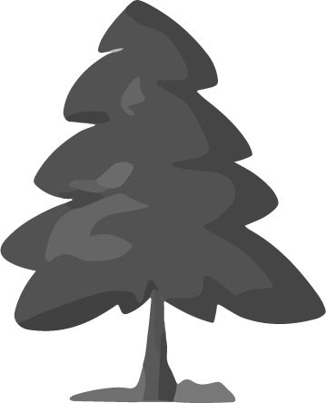

Vídeo del parque que ofrece una vista panorámica de 360º desde el punto de grabación.
Vídeo del parque con vista en 360º
El parque del Bienestar en la ciudad.
 Parque del Oeste
Parque del Oeste
Este parque tiene unos 82.032 metros cuadrados para disfrutar dentro de la ciudad de Oviedo.
En él podrás encontrar | Naturaleza | Relajación | Desconexión.
Un lugar ideal para disfrutar con niños y mayores.
.jpg)
Campo y naturaleza
Para disfrutar entre árboles y plantas.
Puente sobre el rio Gafo.
.png) Paseo a través del bosque
Paseo a través del bosque
Dentro de este parque podemoso disfrutar de un paseo a la vereda del Gafo, que es afluente del Nalón y cuyo caudal es escaso excepto cuando llueve.
Aprendemos
.png) Dónde se encuentra
Dónde se encuentra
Este parque está anclado en la ladera que desciende desde El Cristo-Buenavista hasta el valle del río San Claudio, comenzando en la Argañosa y se extiende hasta las áreas residenciales de Olivares.
Está rodeado de numerosas viviendas, cuyos habitantes pueden disfrutar de todo el parque , ya sean niños o mayores, el parque está muy bién acondicionado.
Parque del Oeste
.png) Lleno de vida
Lleno de vida
El parque es hogar de diversas aves como mirlos, palomas, gorriones que llenan el aire con sus vuelos. Hay pequeños mamíferos como ratones y
algunos erizos, que hacen sus nidos en los diversos árboles, arbustos, etc., que los cobijan.
Explora las Otras Zonas Verdes de Oviedo

Descubre tu refugio natural en Oviedo, explora los diversos oasis y remansos de paz que la ciudad tiene para ofrecer.
Al igual que en los parques, en estas zonas verdes podrás encontrar Naturaleza | Deporte | Bienestar.
.jpg)
Los árboles del parque.
.png) Parque del Oeste
Parque del Oeste
.jpg)
.jpg)
.jpg)
Es un extenso espacio verde que ofrece vistas impresionantes del Naranco y de la Sierra del Aramo. Alberga una rica diversidad de especies arbóreas. Entre las más destacadas se encuentran: Sauces Llorones, Eucaliptos, Plataneros, Abetos, Robles, Castaños, etc. Ideal para disfrutar de la naturaleza y aprender sobre diferentes especies de árboles. También encontramos variedad de plantas ornamentales, que según la temporada se van cambiando, de esto se encarga Parques y Jardines de Oviedo.
Disfrutando del parque.
.png) Descanso en la ciudad
Descanso en la ciudad
Este parque nos permite pasar un día de relajación disfrutando de toda su belleza y recorriendo los diferentes senderos que hay.
Dispone de zonas verdes, sendas para pasear y disfrutar de diferentes especies botánicas
como: Eucaliptos, Piceas, Pinos, Abedules, Cerezos, Avellanos, Castaños, Robles, etc.
Se encuentra en una zona donde sus habitantes disfrutan de él, tanto para hacer deporte como para el descanso.
.jpg)
Parque del Oeste
Respiramos aire puro
.jpg)
Parque del Oeste
Plantación de árboles
Parque del Oeste
Admiramos el colorido de los árboles
.jpg)
Parque del Oeste
Donde podemos descansar
.jpg)
Parque del Oeste
Las sombras nos acompañan
Conjunto de diferentes árboles.
 ARBORETO
ARBORETO
Es un jardín dedicado primordialmente a árboles, y que en este caso está formado por 73 ejemplares de las especies de robles y arces que proceden de Asia, América del Norte, Centroamérica y Europa.
Se empezó a hacer en el 2010, por un taller de empleo del Ayuntamiento de Oviedo. Lo primero que hicieron los alumnos de estos módulos fue segar con desbrozadoras toda la zona, dejándola limpia de maleza para después convertir en un parque lo que antes era sólo un enorme matorral, con un completo sistema de riego.
Clima Oceánico
Bosque Caducifolio
Saber más...
Clima Mediterráneo
Arboledas
Saber más...
Clima Oceanico
Bosque Caducifolio
Saber más...
Clima Mediterráneo
Bosques
Saber más...

Ubicación: Este clima es predominante en la costa oeste de Europa,
especialmente
en
áreas
como la cornisa cantábrica y los Pirineos.
 Características: Se caracteriza por temperaturas suaves y precipitaciones
abundantes
durante
todo el año, lo que favorece la vegetación exuberante.
Características: Se caracteriza por temperaturas suaves y precipitaciones
abundantes
durante
todo el año, lo que favorece la vegetación exuberante.
 Vegetación: Los bosques caducifolios en esta zona están compuestos
principalmente
por
especies como el haya y el roble, que pierden sus hojas en otoño e invierno.
Vegetación: Los bosques caducifolios en esta zona están compuestos
principalmente
por
especies como el haya y el roble, que pierden sus hojas en otoño e invierno.
Ubicación: El clima mediterráneo se encuentra en la región mediterránea de
Europa, incluyendo el sur de España, Italia, Grecia y partes de los Balcanes.
 Características: Se caracteriza por veranos cálidos y secos, e inviernos
suaves y húmedos. En los veranos pueden
tener escasez de lluvia.
Características: Se caracteriza por veranos cálidos y secos, e inviernos
suaves y húmedos. En los veranos pueden
tener escasez de lluvia.
 Vegetación: La vegetación típica matorrales esclerófilos, bosques de
encinas y alcornoques,y arbustos resistentes a la sequía, como el romero y la lavanda.
Vegetación: La vegetación típica matorrales esclerófilos, bosques de
encinas y alcornoques,y arbustos resistentes a la sequía, como el romero y la lavanda.
Ubicación: Este clima se encuentra en la costa occidental de Europa, abarcando
regiones como el oeste de Francia, el Reino Unido y el norte de España, entre otras.
 Características: Las temperaturas son suaves, con
inviernos templados y veranos frescos. Las lluvias son abundantes y distribuidas de
manera uniforme durante el año.
Características: Las temperaturas son suaves, con
inviernos templados y veranos frescos. Las lluvias son abundantes y distribuidas de
manera uniforme durante el año.
 Vegetación: Los bosques caducifolios, característicos de esta zona, están
dominados por árboles como el haya, el roble y el castaño.
Vegetación: Los bosques caducifolios, característicos de esta zona, están
dominados por árboles como el haya, el roble y el castaño.
Ubicación: Este clima predomina en el sureste y suroeste de la Península
Ibérica, Andalucía, Murcia, la Comunidad Valenciana y
partes de Cataluña y Extremadura.
 Características: Los veranos son cálidos y secos y los inviernos
son suaves y húmedos. La lluvia se concentra en los meses de otoño y
primavera.
Características: Los veranos son cálidos y secos y los inviernos
son suaves y húmedos. La lluvia se concentra en los meses de otoño y
primavera.
 Vegetación: La flora típica incluye encinas, alcornoques, pinos y arbustos
resistentes a la sequía como el romero, la jara y el tomillo.
Vegetación: La flora típica incluye encinas, alcornoques, pinos y arbustos
resistentes a la sequía como el romero, la jara y el tomillo.
Asia Oriental
China
Saber más...
Asia Occidental
Bosques
Saber más...
Norte América
Vegetación
Saber más...
América Central
Selvas
Saber más...
Ubicación: Es un vasto país desde el Himalaya al suroeste hasta las llanuras costeras en el este, que varía desde el frío ártico en el noreste hasta el subtropical en el sur.
 Características: El territorio chino es vasto y variado, con características naturales como los ríos Yangtsé y Amarillo, las montañas Kunlun y el desierto de Gobi.
Características: El territorio chino es vasto y variado, con características naturales como los ríos Yangtsé y Amarillo, las montañas Kunlun y el desierto de Gobi.
 Vegetación:China alberga una impresionante biodiversidad. Los bosques de bambú,en el Sur, en el norte los bosques de coníferas y las praderas en la estepa.
Vegetación:China alberga una impresionante biodiversidad. Los bosques de bambú,en el Sur, en el norte los bosques de coníferas y las praderas en la estepa.
Ubicación: Asia Occidental está situada en la parte más occidental de Asia, limitando al este con el Mar Caspio y al oeste con el Mar Mediterráneo.
 Características:Estos bosques incluyen pinos, robles y cedros, con los famosos Cedros del Líbano. Las elevaciones más altas permiten que prospere tambien el abeto.
Características:Estos bosques incluyen pinos, robles y cedros, con los famosos Cedros del Líbano. Las elevaciones más altas permiten que prospere tambien el abeto.
 Vegetación: Su vegetación, que va desde los desiertos áridos con poca vegetación hasta las áreas más fértiles y cultivables. Donde se cultivan cereales, frutas y verduras.
Vegetación: Su vegetación, que va desde los desiertos áridos con poca vegetación hasta las áreas más fértiles y cultivables. Donde se cultivan cereales, frutas y verduras.
Ubicación: Está en el hemisferio occidental desde el Ártico hasta el trópico, y tiene gran variedad de climas y ecosistemas, desde tundras heladas hasta desiertos cálidos.
 Características: Incluyen vastas cadenas montañosas como las Rocallosas y los Apalaches, además de extensas praderas y llanuras.
Características: Incluyen vastas cadenas montañosas como las Rocallosas y los Apalaches, además de extensas praderas y llanuras.
 Vegetación: En el norte, bosques boreales con coníferas como pinos y abetos. Existen bosques caducifolios con robles y arces.
Vegetación: En el norte, bosques boreales con coníferas como pinos y abetos. Existen bosques caducifolios con robles y arces.
Ubicación: América Central se encuentra entre América del Norte y América del Sur, formando un puente terrestre entre los dos continentes.
 Características:Es famosa por su biodiversidad, albergando una gran cantidad de especies endémicas. Desde selvas tropicales hasta manglares costeros.
Características:Es famosa por su biodiversidad, albergando una gran cantidad de especies endémicas. Desde selvas tropicales hasta manglares costeros.
 Vegetación: En las selvas tropicales, que cubren gran parte de la región, predominan los árboles altos y frondosos, lianas y epífitas.
Vegetación: En las selvas tropicales, que cubren gran parte de la región, predominan los árboles altos y frondosos, lianas y epífitas.
Descubre yExperimenta
.png) Ruta y Actividades en Parque del Oeste
Ruta y Actividades en Parque del Oeste
En este parque hay una
ruta circular
que permite disfrutar de la naturaleza y experimentar aquellas actividades que se encuentran por dicho parque:
1-Caminos para pasear.
2-Ruta Circular en el Parque.
3-Naturaleza en vivo.
Sobre Nosotros
Somos un equipo de desarrolladores web dedicados a crear experiencias únicas.
Nos
esforzamos por transformar la visita a los parques por excelencia de Oviedo en experiencias
digitales visualmente atractivas, intuitivas y fáciles de usar.
© Copyright 2024.
Todos los derechos reservados.

.jpg)
.jpg)
.jpg)
.jpg)
.jpg)